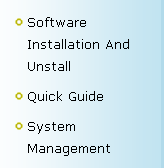

Operating Instructions


- ⊕Click the menu on the left side , you can expand / put away the secondary menu;
- ⊕Click the secondary menu, you can display help's detail on the right page.
Left menu operation：
- ⊕Click to interface the lower right corner Top / Close button, you can quickly to return to the top of page, or close the this page.
- ⊕If you feel that this button affected your reading, you can click the "∨" at the top of the button to put away it. At this time, menu's top change into "∧", you can click here to expand this menu again.
Quick button operation：
Definitions
Super user: The user who has all operation levels of the system, which can assign new users (such as company management personnel, registrar, access control administrator and attendance statistic) in the system and configure the roles of corresponding users.
Role: During daily use, the super user needs to assign new users having different levels. To avoid individual setting for each user, roles having certain levels can be set in role management, and then be assigned to specified users.
Attendance timetable: Set timetables that may be used for personnel attendance and to configure parameters, such as on/ off-duty time, allowed late minute/ early leave minutes, whether check-in/ check-out required, setting of permitted check-in/ check-out time range, break time setting and overtime setting, etc. it’s the minimum unit of personnel attendance time setting.
Unit/ minimum unit: Units include day, hour and minute, etc. Minimum units are values. They are combined to set the minimum unit of a parameter for statistics and calculation, such as 1 days, 1 hours and 1 minutes. For example, if the exception unit is hour and the minimum unit is 1, the minimum unit for calculation will be 1 hour. Upon rounding off, if the minimum unit is 1 hour and the value is 1.5, it will be 2 hours after rounding off; if the value is 1.4, it will be 1 hour after rounding off.
Delay calculated as overtime: Whether or not calculated as overtime after the working duration is exhausted.
Append log: Append log means manual make-up of attendance records upon business traveling of a person or omission of card punching, which is usually conducted after the end of an attendance cycle, summarizing and inputting by the statistic personnel.
Attendance status: Means the record status after the personnel punching card. There are eight statuses: check-in, check-out, dinner start, dinner end, overtime check-in, overtime check-out, out, and return from outside.
Correction: According to the personnel schedule and the punching card time, record the status as check-in or check-out base on the attendance calculation rules. The final statistics is calculate these correction.
Expected attendance: Expected working time of a personnel according to the scheduling. The default unit is working day, which can be modified in the “calculation item” of the attendance parameters, select “Expected/ Actual” and change the parameters.
Actual attendance: Actual working time of a personnel according to the actual check-in/ check-out records. The default unit is working day, which can be modified in the “calculation item” of the attendance parameters, select “Expected/ Actual” and change the parameters.
Late: Refers to the time setting of the corresponding timetable and start setting of late, and whether the actual check-out is later than the expected check-out for the interval. Late will not compromise the working minutes counted for attendance.
Early leave: Refers to the time setting of corresponding timetable and the start setting of early leave, and whether the actual check-out is earlier than the expected check-out for the timetable. Early leave will not compromise the working minutes counted for attendance.
Absent: Failure of check-in or check-out will be deemed as absent, or late/ early leave exceed specified minutes will be deemed as absent.
Expected check-in/ expected check-out: Expected check-in/ expected check-out refers to “required check-in/ check-out” in the timetable setting. “Yes” means expected check-in/ check-out, and “No” means optional check-in/ check-out.
Failure of check-in/ failure of check-out: Failure of check-in/ failure of check-out refers to whether check-in/ check-out is performed or not.
Attendance duration (time): Attendance duration refers to the duration between actual check-in and actual check-out.
Exception: Refers to ask for leave during the timetable.
Working minutes: Refer to working duration based on actual check-in, actual check-out, expected check-in and expected check-out.
Timetable duration: Refers to the working duration of an attendance timetable in the shift setting of the day.
Reschedule: Flexible working/ break time adjustment is provided to the user. The user can set rest for personnel when scheduling is done, or set on-duty status upon personnel rest, in which case rescheduling is required.
Fixed overtime: Refer to the normal working time including the overtime situation. Such as 8:00—18：00, the length is 10 hours, but the normal working time is 8 hours, whether to set the extra 2 hour as fixed overtime. 0 represents no overtime duration. If it is greater than 0, the overtime duration will count as normal overtime in no exception or absent situation. It will be counted as normal overtime along with delay calculated overtime and single normal overtime duration.
Shift: A shift consists of one or more predefined attendance timetables in certain order and cycle, being predefined working timetables for personnel. Shifts shall be set first for personnel attendance management.
Scheduling: Used to set the personnel working shift in specific time period in attendance. It’s the basic of attendance statistic. A personnel with irregular working duration and need to calculate attendance, flexible shifts can be used for the scheduling. When a person is not subject to scheduling but has card punching records, flexible timetable will be used to calculate the scheduling, and count as a type of overtime.
Temporary scheduling: After the personnel scheduling, temporary shift can be used to adjust the shifts on some dates upon temporary change of the working duration. Such scheduling method is also suitable for the position with irregular working duration.
Allowed late/ early leave: Refers to permitted duration of late or early leave against specified on-duty time.
Check-in/ check-out required: Some companies may only require check-in without check-out, or require check-out without check-in. If required check-in or required check-out is set, the corresponding item will be subject to attendance records.
Working duration: The duration worked between check-in and check-out time set in the attendance timetable, in minutes. The value entered may not be equal to the timetable duration, being greater or less, depending on company rules. Normally, the value will neither be greater than 480 nor be less than 0. The value, if being 0, represents overtime duration, and will not be counted as working duration, but as overtime instead.
Flexible timetable: Flexible timetable are the default set of the system. For flexible timetable, work delay will not be counted as overtime, and late, early leave, or absent will not be counted. The records will be based on even card punches, and the number of lines of the daily report will be automatically generated as the lines number of attendance records. If there are 4 records, the daily report of the day will have 2 lines; if 6 records, 3 lines. The attendance duration will be the check-out time reduce the check-in time of each timetable.
Flexible shifts: Flexible shifts are the default attendance shifts of the system, being the cycling of flexible timetables in a week. Flexible shifts can be used for the scheduling of personnel with irregular working duration subject to attendance records. When a person is not subject to scheduling but has card punching records, flexible timetable will be used to calculate the scheduling, and count as a type of overtime such as rest day overtime, holiday overtime. Flexible shifts are suitable for entrepreneurs, business personnel, service personnel and order-based production personnel, etc.
Check-in start/ end: The interval is the valid check-in duration, and check-in records out of this range will be invalid.
Check-out start/ end: The interval is the valid check-out duration, and check-out records out of this range will be invalid. The check-out start and check-in end time can not be overlapped.
Break start/ end time during the timetable: It is used when two card punches are required for a day while required to deduct the dining and break time, such as 08:00-17:30, in which case the lunch time and break time shall be deducted. Here such time as 12:00-13:30 shall be set, and will not be directly counted as time points, but taken into account upon calculation of attendance duration. For example, if the working duration is 4 hours in the morning, in case 12:00-17:30 (5.5 hours) directly serves as the absent duration, it will be greater than the actual duration (4 hours, 13:30-17:30). Therefore, it is required to set the rest start and end times between the two card punches. Otherwise, such setting is not required.
Super user: The user who has all operation levels of the system, which can assign new users (such as company management personnel, registrar, access control administrator and attendance statistic) in the system and configure the roles of corresponding users.
Role: During daily use, the super user needs to assign new users having different levels. To avoid individual setting for each user, roles having certain levels can be set in role management, and then be assigned to specified users.
Access control time zone: It can be used for door timing. The reader can be made usable during valid time periods of certain doors and unusable during other time periods. Time zone can also be used to set Normal Open time periods of doors, or set access control levels so that specified users can only access specified doors during specified time periods (including access levels and First-Card Normal Open settings).
Door status delay: The duration for delayed detection of door sensor after the door is opened. Detection is performed only after the door is opened and the delay duration expired. When the door is not in the “Normally Open” period, and the door is opened, the device will start timing. It will trigger alarm when the delay duration expired, and stop alarm when you close the door. The door status delay should be longer than lock open duration.
Close and reverse-lock: Set locking or not after door closing.
Lock open duration: Used to control the delay for unlocking after card punching.
First-Card Normal Open: During a specified interval, after the first card punching by a person having First-Card Normal Open level, the door will be Normal Open, and will automatically restore closing after the valid interval expired.
Multi-Card Opening: This function needs to be enabled in some special access occasions, where the door will open only after consecutive card punching by several people. Before verifying, any card punching out of this combination (even the card belong to other combination) will interrupt the procedure, and you need to wait 10 seconds to restart verifying. It will not open upon card punching by one of the combination.
Interlock: Can be set for any two or more lock belong to one access control panel, so that when one door is opened, the others will be closed. And you can open one door only when others are closed.
Anti-pass back: The card holder who entered from a door by card punching must exit from the same door by card punching, with the entry and exit records strictly consistent.
Linkage setting: When an event is triggered at an input point of the access control system, a linkage action will occur at the specified output point to control such events as verification, opening, alarm and exception of the system and list them in the corresponding monitored report for view by the user.
Door status delay: The duration for delayed detection of door sensor after the door is opened. Detection is performed only after the door is opened and the delay duration expired. When the door is not in the “Normally Open” period, and the door is opened, the device will start timing. It will trigger alarm when the delay duration expired, and stop alarm when you close the door. The door status delay should be longer than lock open duration.
Close and reverse-lock: Set locking or not after door closing.
Lock open duration: Used to control the delay for unlocking after card punching.
First-Card Normal Open: During a specified interval, after the first card punching by a person having First-Card Normal Open level, the door will be Normal Open, and will automatically restore closing after the valid interval expired.
Multi-Card Opening: This function needs to be enabled in some special access occasions, where the door will open only after consecutive card punching by several people. Before verifying, any card punching out of this combination (even the card belong to other combination) will interrupt the procedure, and you need to wait 10 seconds to restart verifying. It will not open upon card punching by one of the combination.
Interlock: Can be set for any two or more lock belong to one access control panel, so that when one door is opened, the others will be closed. And you can open one door only when others are closed.
Anti-pass back: The card holder who entered from a door by card punching must exit from the same door by card punching, with the entry and exit records strictly consistent.
Linkage setting: When an event is triggered at an input point of the access control system, a linkage action will occur at the specified output point to control such events as verification, opening, alarm and exception of the system and list them in the corresponding monitored report for view by the user.
Attendance timetable: Set timetables that may be used for personnel attendance and to configure parameters, such as on/ off-duty time, allowed late minute/ early leave minutes, whether check-in/ check-out required, setting of permitted check-in/ check-out time range, break time setting and overtime setting, etc. it’s the minimum unit of personnel attendance time setting.
Unit/ minimum unit: Units include day, hour and minute, etc. Minimum units are values. They are combined to set the minimum unit of a parameter for statistics and calculation, such as 1 days, 1 hours and 1 minutes. For example, if the exception unit is hour and the minimum unit is 1, the minimum unit for calculation will be 1 hour. Upon rounding off, if the minimum unit is 1 hour and the value is 1.5, it will be 2 hours after rounding off; if the value is 1.4, it will be 1 hour after rounding off.
Delay calculated as overtime: Whether or not calculated as overtime after the working duration is exhausted.
Append log: Append log means manual make-up of attendance records upon business traveling of a person or omission of card punching, which is usually conducted after the end of an attendance cycle, summarizing and inputting by the statistic personnel.
Attendance status: Means the record status after the personnel punching card. There are eight statuses: check-in, check-out, dinner start, dinner end, overtime check-in, overtime check-out, out, and return from outside.
Correction: According to the personnel schedule and the punching card time, record the status as check-in or check-out base on the attendance calculation rules. The final statistics is calculate these correction.
Expected attendance: Expected working time of a personnel according to the scheduling. The default unit is working day, which can be modified in the “calculation item” of the attendance parameters, select “Expected/ Actual” and change the parameters.
Actual attendance: Actual working time of a personnel according to the actual check-in/ check-out records. The default unit is working day, which can be modified in the “calculation item” of the attendance parameters, select “Expected/ Actual” and change the parameters.
Late: Refers to the time setting of the corresponding timetable and start setting of late, and whether the actual check-out is later than the expected check-out for the interval. Late will not compromise the working minutes counted for attendance.
Early leave: Refers to the time setting of corresponding timetable and the start setting of early leave, and whether the actual check-out is earlier than the expected check-out for the timetable. Early leave will not compromise the working minutes counted for attendance.
Absent: Failure of check-in or check-out will be deemed as absent, or late/ early leave exceed specified minutes will be deemed as absent.
Expected check-in/ expected check-out: Expected check-in/ expected check-out refers to “required check-in/ check-out” in the timetable setting. “Yes” means expected check-in/ check-out, and “No” means optional check-in/ check-out.
Failure of check-in/ failure of check-out: Failure of check-in/ failure of check-out refers to whether check-in/ check-out is performed or not.
Attendance duration (time): Attendance duration refers to the duration between actual check-in and actual check-out.
Exception: Refers to ask for leave during the timetable.
Working minutes: Refer to working duration based on actual check-in, actual check-out, expected check-in and expected check-out.
Timetable duration: Refers to the working duration of an attendance timetable in the shift setting of the day.
Reschedule: Flexible working/ break time adjustment is provided to the user. The user can set rest for personnel when scheduling is done, or set on-duty status upon personnel rest, in which case rescheduling is required.
Fixed overtime: Refer to the normal working time including the overtime situation. Such as 8:00—18：00, the length is 10 hours, but the normal working time is 8 hours, whether to set the extra 2 hour as fixed overtime. 0 represents no overtime duration. If it is greater than 0, the overtime duration will count as normal overtime in no exception or absent situation. It will be counted as normal overtime along with delay calculated overtime and single normal overtime duration.
Shift: A shift consists of one or more predefined attendance timetables in certain order and cycle, being predefined working timetables for personnel. Shifts shall be set first for personnel attendance management.
Scheduling: Used to set the personnel working shift in specific time period in attendance. It’s the basic of attendance statistic. A personnel with irregular working duration and need to calculate attendance, flexible shifts can be used for the scheduling. When a person is not subject to scheduling but has card punching records, flexible timetable will be used to calculate the scheduling, and count as a type of overtime.
Temporary scheduling: After the personnel scheduling, temporary shift can be used to adjust the shifts on some dates upon temporary change of the working duration. Such scheduling method is also suitable for the position with irregular working duration.
Allowed late/ early leave: Refers to permitted duration of late or early leave against specified on-duty time.
Check-in/ check-out required: Some companies may only require check-in without check-out, or require check-out without check-in. If required check-in or required check-out is set, the corresponding item will be subject to attendance records.
Working duration: The duration worked between check-in and check-out time set in the attendance timetable, in minutes. The value entered may not be equal to the timetable duration, being greater or less, depending on company rules. Normally, the value will neither be greater than 480 nor be less than 0. The value, if being 0, represents overtime duration, and will not be counted as working duration, but as overtime instead.
Flexible timetable: Flexible timetable are the default set of the system. For flexible timetable, work delay will not be counted as overtime, and late, early leave, or absent will not be counted. The records will be based on even card punches, and the number of lines of the daily report will be automatically generated as the lines number of attendance records. If there are 4 records, the daily report of the day will have 2 lines; if 6 records, 3 lines. The attendance duration will be the check-out time reduce the check-in time of each timetable.
Flexible shifts: Flexible shifts are the default attendance shifts of the system, being the cycling of flexible timetables in a week. Flexible shifts can be used for the scheduling of personnel with irregular working duration subject to attendance records. When a person is not subject to scheduling but has card punching records, flexible timetable will be used to calculate the scheduling, and count as a type of overtime such as rest day overtime, holiday overtime. Flexible shifts are suitable for entrepreneurs, business personnel, service personnel and order-based production personnel, etc.
Check-in start/ end: The interval is the valid check-in duration, and check-in records out of this range will be invalid.
Check-out start/ end: The interval is the valid check-out duration, and check-out records out of this range will be invalid. The check-out start and check-in end time can not be overlapped.
Break start/ end time during the timetable: It is used when two card punches are required for a day while required to deduct the dining and break time, such as 08:00-17:30, in which case the lunch time and break time shall be deducted. Here such time as 12:00-13:30 shall be set, and will not be directly counted as time points, but taken into account upon calculation of attendance duration. For example, if the working duration is 4 hours in the morning, in case 12:00-17:30 (5.5 hours) directly serves as the absent duration, it will be greater than the actual duration (4 hours, 13:30-17:30). Therefore, it is required to set the rest start and end times between the two card punches. Otherwise, such setting is not required.